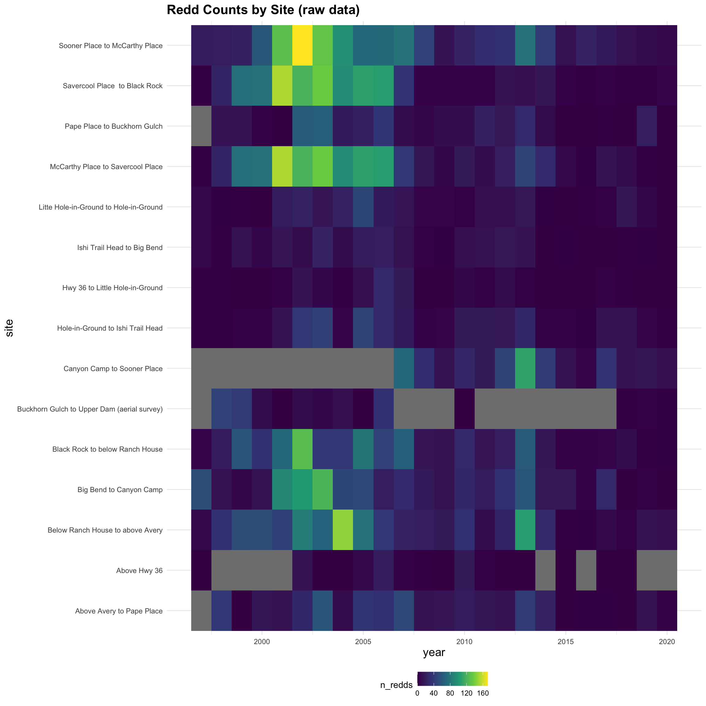
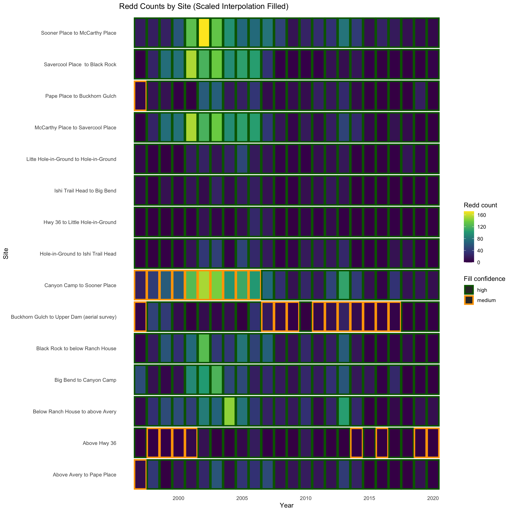

Rows: 360
Columns: 3
$ site <chr> "Above Hwy 36", "Above Hwy 36", "Above Hwy 36", "Above Hwy 36"…
$ year <int> 1997, 1998, 1999, 2000, 2001, 2002, 2003, 2004, 2005, 2006, 20…
$ n_redds <dbl> 0, NA, NA, NA, NA, 12, 0, 0, 7, 19, 3, 1, 0, 17, 3, 0, 0, NA, …Mill Creek - redd data analysis and interpolation
Objective
Compile and standardize a long-term redd survey dataset across Mill Creek sections and years, and to address gaps in survey coverage using an interpolation approach that preserves both annual variation in spawning abundance and spatial patterns in redd distribution.
Read in raw data
Data: adult-holding-redd-and-carcass-surveys_mill-creek_data-raw_Mill Creek SRCS Redd Counts by Section 1997-2020 Reformatted.xlsx
Visualize data gaps
Years that were not surveyed are shown in grey. We can see that from the late 1990s through mid-2000s, the Canyon Camp to Sooner Place reach was not surveyed.

Some survey sites may be more productive than others. If this is true, then missing one reach may affect annual totals more than if another reach (with lower productivity) were missing. The survey sites with the highest counts have good coverage across years (i.e. Sooner Place to McCarthy Place, McCarthy Place to Savercool Place, and Savercool Place to Black Rock), but Canyon Camp to Sooner Place sits above the median (19 redds). This implies that some sites contribute more redds to the annual total than others, and this spatial variation should be included in any interpolation analysis.
| Survey Reach | Mean Redds Per Site |
|---|---|
| Sooner Place to McCarthy Place | 51 |
| McCarthy Place to Savercool Place | 46 |
| Savercool Place to Black Rock | 42 |
| Below Ranch House to above Avery | 37 |
| Big Bend to Canyon Camp | 33 |
| Black Rock to below Ranch House | 32 |
| Canyon Camp to Sooner Place | 32 |
| Above Avery to Pape Place | 19 |
| Pape Place to Buckhorn Gulch | 16 |
| Hole-in-Ground to Ishi Trail Head | 14 |
| Buckhorn Gulch to Upper Dam (aerial survey) | 12 |
| Litte Hole-in-Ground to Hole-in-Ground | 10 |
| Ishi Trail Head to Big Bend | 8 |
| Above Hwy 36 | 4 |
| Hwy 36 to Little Hole-in-Ground | 4 |
Interpolation Method
Redd counts were not available for all river sections in every year because some sections were not surveyed (n/s). To estimate redd abundance in these missing site–year combinations, we used a scaled interpolation approach that maintains the strong year-to-year variation in overall redd production and a site’s typical relative productivity.
We implemented the following method:
- For each year, we calculated that year’s observed mean redds per surveyed site (
mean_obs_per_site), which reflects basin-wide changes in spawning abundance. - For each site, we calculated a
relative_index: the average of that site’s observed counts divided by each corresponding year’smean_obs_per_site, then re-centered so the average site has an index of 1. This produces a relative index describing whether a site is typically above or below average, independent of which specific years it happened to be surveyed in. - Missing site–year redd counts were filled as
relative_index(site) * mean_obs_per_site(year), so a below-average section missing in a strong run year is filled higher than an average section missing in the same year, and vice versa.
Results
| year | total_redds_obs | n_sites_missing | total_redds_filled | obs_fraction | redd_multiplier |
|---|---|---|---|---|---|
| 1997 | 102 | 4 | 143 | 0.71 | 1.40 |
| 1998 | 237 | 2 | 282 | 0.84 | 1.19 |
| 1999 | 355 | 2 | 422 | 0.84 | 1.19 |
| 2000 | 349 | 2 | 415 | 0.84 | 1.19 |
| 2001 | 703 | 2 | 836 | 0.84 | 1.19 |
| 2002 | 916 | 1 | 1068 | 0.86 | 1.17 |
| 2003 | 850 | 1 | 991 | 0.86 | 1.17 |
| 2004 | 594 | 1 | 693 | 0.86 | 1.17 |
| 2005 | 682 | 1 | 795 | 0.86 | 1.17 |
| 2006 | 606 | 1 | 707 | 0.86 | 1.17 |
| 2007 | 460 | 1 | 478 | 0.96 | 1.04 |
| 2008 | 181 | 1 | 188 | 0.96 | 1.04 |
| 2009 | 110 | 1 | 114 | 0.96 | 1.04 |
| 2010 | 241 | 0 | 241 | 1.00 | 1.00 |
| 2011 | 183 | 1 | 190 | 0.96 | 1.04 |
| 2012 | 271 | 1 | 281 | 0.96 | 1.04 |
| 2013 | 600 | 1 | 623 | 0.96 | 1.04 |
| 2014 | 220 | 2 | 231 | 0.95 | 1.05 |
| 2015 | 58 | 1 | 60 | 0.97 | 1.03 |
| 2016 | 47 | 2 | 50 | 0.94 | 1.06 |
| 2017 | 129 | 1 | 134 | 0.96 | 1.04 |
| 2018 | 76 | 0 | 76 | 1.00 | 1.00 |
| 2019 | 90 | 1 | 91 | 0.99 | 1.01 |
| 2020 | 40 | 1 | 40 | 1.00 | 1.00 |
Fill confidence was assigned based on whether redd counts were directly observed or interpolated, and on how many sites were surveyed in that year. Observed values were given a high confidence rating. For interpolated values, confidence was determined by the number of sites surveyed that year: years with at least 10 sites surveyed were assigned medium confidence, years with at least 5 sites surveyed were assigned low confidence, and years with fewer than 5 sites surveyed were assigned very low confidence.

| site | n_years_present | total_redds | total_redds_with_interpolation |
|---|---|---|---|
| Above Avery to Pape Place | 23 | 434 | 442 |
| Above Hwy 36 | 16 | 62 | 84 |
| Below Ranch House to above Avery | 24 | 897 | 897 |
| Big Bend to Canyon Camp | 24 | 783 | 783 |
| Black Rock to below Ranch House | 24 | 772 | 772 |
| Buckhorn Gulch to Upper Dam (aerial survey) | 13 | 160 | 252 |
| Canyon Camp to Sooner Place | 14 | 442 | 1363 |
| Hole-in-Ground to Ishi Trail Head | 24 | 326 | 326 |
| Hwy 36 to Little Hole-in-Ground | 24 | 104 | 104 |
| Ishi Trail Head to Big Bend | 24 | 191 | 191 |
| Litte Hole-in-Ground to Hole-in-Ground | 24 | 247 | 247 |
| McCarthy Place to Savercool Place | 24 | 1106 | 1106 |
| Pape Place to Buckhorn Gulch | 23 | 361 | 367 |
| Savercool Place to Black Rock | 24 | 996 | 996 |
| Sooner Place to McCarthy Place | 24 | 1219 | 1219 |
Integration into final annual adult count
The dataset with redd_multiplier for each year is then multiplied by the redd counts provided directly from the stream teams (Data: data-raw/helper-tables/mill_deer_adult_historical.csv).